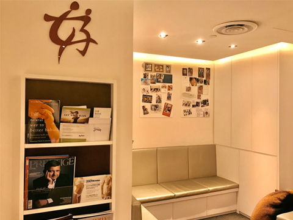
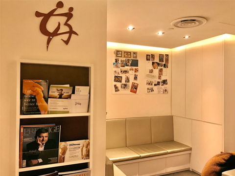

Make an appointment to start the process of starting your family
 


Dr Ann Tan is Singapore’s renowned female gynaecologist with extensive experience in the management of fibroids, ovarian cyst and endometriosis through minimally invasive techniques.
A Public Service Commission Scholar, Dr Tan has won several prestigious awards in her field of specialization including the HMDP Scholarship for Fetal Echocardiography at Yale School of Medicine in 1995, the Young Investigator Award by the International Society of Ultrasound in Obstetrics in 1995 & Gynaecology & the Young MRCOG Award by the Hong Kong Royal College of Obstetricians & Gynaecologists in 1993.
Dr Tan is the first Singaporean to hold the Diploma of Fetal Medicine from the Fetal Medicine Foundation. (the foundation is an international body accrediting Fetal Maternal Medicine specialists). She is a dedicated gynaecologist and obstetrician to the field of prenatal diagnosis & care of both mother and fetus.
Dr Tan has authored medical papers and serves as a reviewer on peer-reviewed journals. She has also presented papers at numerous medical forums in Singapore & internationally.
Currently, Dr Ann Tan serves on the Women's Health Committee under the Health Promotion Board and is the Honorary Secretary for the Medical Board of Mount Elizabeth Hospital.
We understand you may be concerned about having a cyst or fibroid. To make the most of your appointment with the gynaecologist, you may write down any symptoms you are experiencing or medications that you are taking. If you have a family member or a close friend who can accompany you, it will be helpful so that you have additional support.
Your consultation with Dr Ann Tan is private time set aside for you to discuss all of your concerns and questions, directly, about any treatment you may be considering. No decision should be taken lightly and to ensure you are comfortable before the commencement of any treatment, Dr Tan requires one-to-one consultations with each patient so that both of you are confident in your decisions, and that she can confirm the treatment and care that is most appropriate for you. Your consultation is designed to fully inform you of the treatment or procedure that you are considering, and to discuss any other available options or considerations that may apply for your best outcomes.
Uterine fibroids are benign tumours that originate in the uterus (womb) and are usually a round or semi-round in shape. Most women with uterine fibroids have no symptoms. Large fibroids can cause pressure, pelvic pain, pressure on the bladder with frequent or even obstructed urination, and pressure on the rectum with pain during defecation.
Ovarian cysts are fluid-filled, sac-like structures within an ovary. Most cysts are never noticed and resolve without women ever realizing that they are there. When a cyst causes symptoms, pain in the belly or pelvis is by far the most common one. Most cysts are diagnosed by ultrasound, which is the best imaging technique for detecting ovarian cysts. Ultrasound imaging is painless and causes no harm.
Endometriosis is a growth of cells similar to those that form the internal lining of the uterus on the outside of the uterus. Endometriosis affects women in their reproductive years. It is one of the leading causes of pelvic pain and infertility.
Our clinic specialises in minimally invasive surgery and patients may expect a faster recovery and less post-operative pain.
The cost of treatment will also vary depending to the medication or procedure required. Before any procedure is conducted, financial counselling will be provided to the patient.
We want to make sure we cater enough time for your visit with our doctor. As such, we strongly advise that you make a prior appointment with our staff. Our fertility specialist will then meet you on the allocated time for a detailed discussion. Please call or email us for an appointment.
Make an appointment to start the process of starting your family
3 Mount Elizabeth #11-12
Mount Elizabeth Medical Centre
Singapore 228510
Tel: (+65) 6734 8188
Fax: (+65) 6262 0330
Email: mail@dranntan.com
Mon - Wed: 9 AM - 6 PM
Friday: 9 AM - 6 PM
Lunch Hour: 1 PM - 2 PM
Thurs & Sat: 9 AM - 1 PM
We are conveniently located at 3 Mount Elizabeth #11-12 Mount Elizabeth Medical Centre Singapore 228510. Location is in the heart of Orchard Road and Singapore’s premier medical hospital.
If you require further directions to our office, please call us at (+65) 6734 8188.